EO Time Series Viewer
A QGIS plugin to explore Earth Observation
Time Series Data
Benjamin Jakimow, Sebastian van der Linden, Fabian Thiel & Patrick Hostert
Geography Department, Humboldt-Universität zu Berlin, Germany
Background
Jakimow, B., Griffiths, P., van der Linden, S. and Hostert, P. (2018): "Mapping pasture management in the Brazilian Amazon from dense Landsat time series." Remote Sensing of Environment 205: 453-468.
| Landsat 7 2014-07-02 |
Landsat 8 2014-07-10 |
Landsat 7 2014-07-18 |
Landsat 8 2014-07-26 |
| 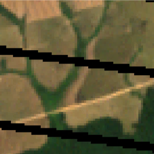 | 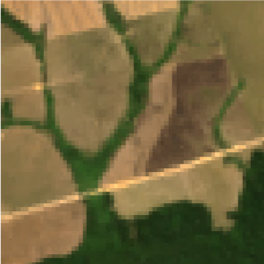 | 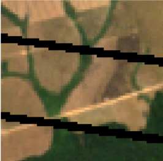 | 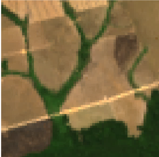 |
- Short visibility of land management
follow up management, clouds, artefacts, ... - Identification of landcover + burning and tillage events for cal/val
80 Landsat (ETM+, OLI), 43 RapidEye, 10 Pléiades, 5 SPOT
GPS positions, official deforestation and land cover maps, administrative units
Camera pictures with locations, personal notes
- We want to visualize all data available
- Different data types, formats, resolutions
| GUI | TS | MM | SP | TP | VRT | Notes | |
| TimeSync | ++ | ++ | + | ++ | - | registration required,
Cohen et al. (2010) |
|
| TSTools | ++ | - | ++ | ++ | open source, QGIS Plugin | ||
| ENVI | ++ | + | ++ | ++ | - | commercial | |
| SNAP | + | + | ++ | + | - | open source | |
| GEE | ++ | + | + | + | online only, Gorelick et al. (2017) | ||
| ArcGIS | - | + | + | - | + | commercial | |
| QGIS | - | + | + | - | + | open source |
Features:
TS = time series is a known concept,
MM = multiple maps side-by-side,
SP = spectral profiles, TP = temporal profiles,
VRT = reads GDAL virtual rasters
Support: basic (+), good (++), none (-)
Goals / Requirements
- Integrated & interactive visualization
spatial, spectral and temporal dimensions in EOTS - Multi-sensor and wide data-format support
different resolutions, spatial extents,
read data "as-is": tif, bsq, hdf, shp, gpkg, vrt, ... - Easy adjustments of visualization settings
apply same render style to multiple observation ... -
Can be used offline
field work in remote areas
EO Time Series Viewer
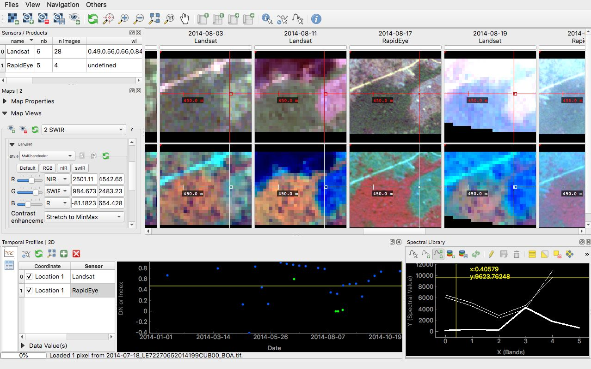
Official QGIS 3 plugin
plugins.qgis.org/plugins/timeseriesviewerplugin/
Add images
 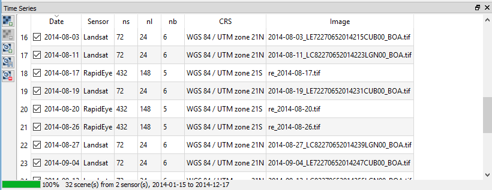
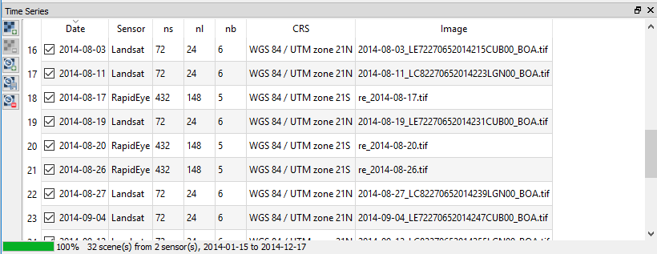
- Automatic timestamp (ISO 8601) extraction
- Varying projections, grids and spatial extents
- Each image get linked to a sensor
- Sensor = (#bands, pixel size, wavelength)
Map Visualization
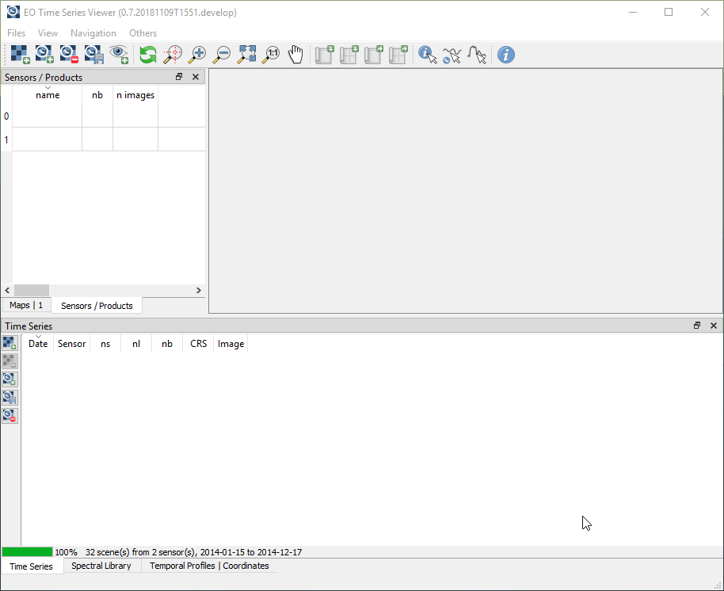 Map Views
Map Views
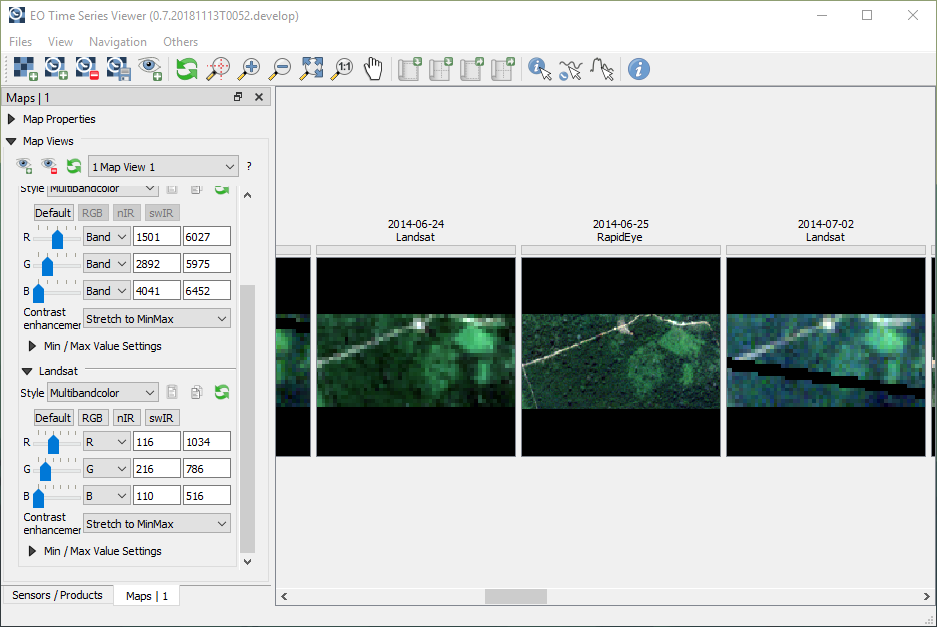
Temporal Profiles
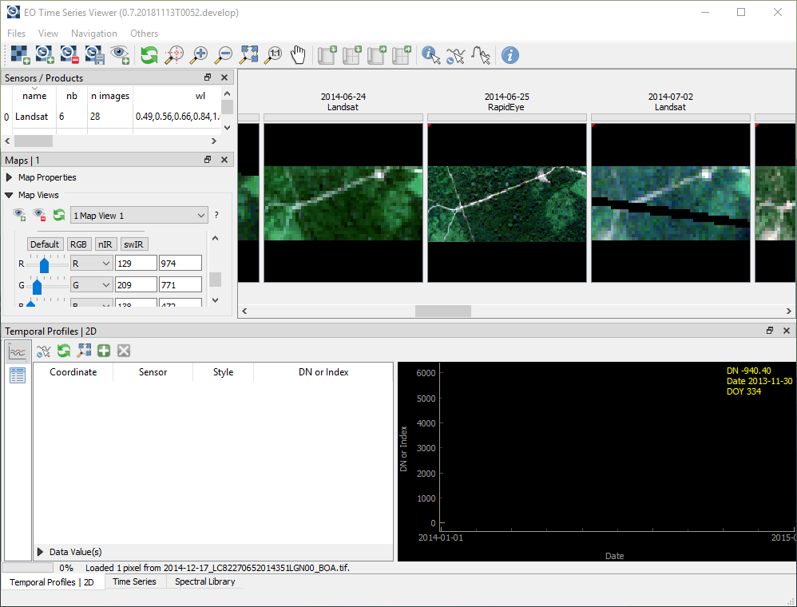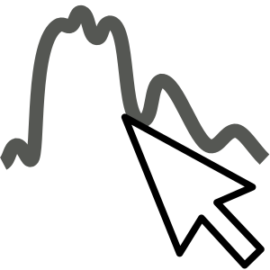 Spectral profiles
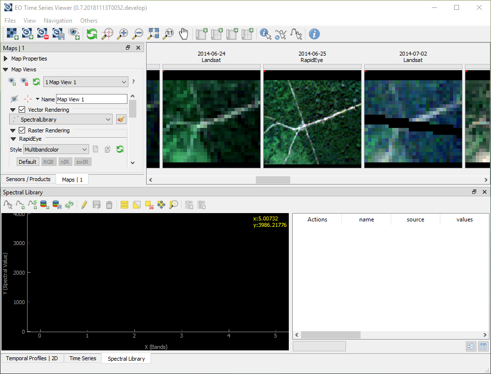 Labeling reference data
Labeling reference data
- Identify and describe points / regions of interest
- Create / edit vector geometries + attributes
open for various use-cases and user-preferences - Copy & paste time stamps, DOY, sensor names, ...
To do's
- Speed-up labeling
categorical labels, shortcuts to save date/DOY - Improve spatial, temporal and spectral visualization
background tasks, spectral-temporal surfaces - Bug fixing
Conclusion
- visualizes raster time series data "as-is"
- provides an interactive view on spatial, spectral and temporal data dimensions
- supports labeling of reference data
- is a QGIS Plugin, free and open source
Thanks for your attention
benjamin.jakimow@geo.hu-berlin.de
bitbucket.org/jakimowb/eo-time-series-viewer
The EO Time Series Viewer is developed at Humboldt-Universität zu Berlin. Born in the SenseCarbon project, it was funded by the German Aerospace Centre (DLR) and granted by the Federal Ministry of Education and Research (BMBF, grant no. 50EE1254). Since 2017 it is developed under contract by the German Research Centre for Geosciences (GFZ) as part of the EnMAP Core Science Team activities, funded by DLR and granted by the Federal Ministry of Economic Affairs and Energy (BMWi, grant no. 50EE1529).